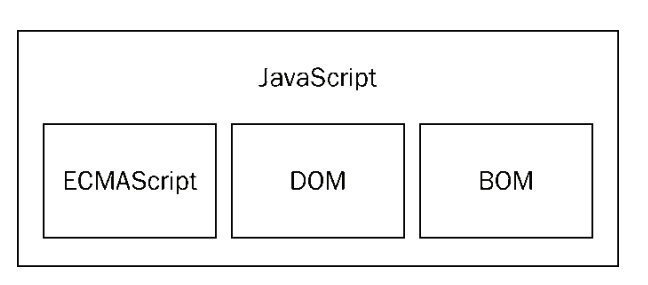
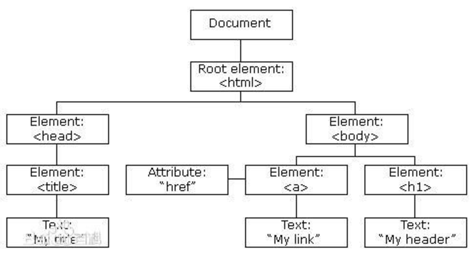

学习目标:
- 掌握API和Web API的概念
- 掌握常见的浏览器提供的API的调用方式
- 能通过API开发常见的页面交互功能
- 能够利用搜索引擎解决问题 typora-copy-images-to: media
Web API
Web API介绍
API的概念
API（Application Programming Interface,应用程序编程接口）是一些预先定义的函数，目的是提供应用程序与开发人员基于某软件或硬件得以访问一组例程的能力，而又无需访问源码，或理解内部工作机制的细节。
- 任何开发语言都有自己的API
- API的特征输入和输出(I/O)
- API的使用方法(console.log())
Web API的概念
浏览器提供的一套操作浏览器功能和页面元素的API(BOM和DOM)
此处的Web API特指浏览器提供的API(一组方法)，Web API在后面的课程中有其它含义
掌握常见的浏览器提供的API的调用方式
JavaScript的组成

ECMAScript - JavaScript的核心
定义了javascript的语法规范
JavaScript的核心，描述了语言的基本语法和数据类型，ECMAScript是一套标准，定义了一种语言的标准与具体实现无关
BOM - 浏览器对象模型
一套操作浏览器功能的API
通过BOM可以操作浏览器窗口，比如：弹出框、控制浏览器跳转、获取分辨率等
DOM - 文档对象模型
一套操作页面元素的API
DOM可以把HTML看做是文档树，通过DOM提供的API可以对树上的节点进行操作
BOM
BOM的概念
BOM(Browser Object Model) 是指浏览器对象模型，浏览器对象模型提供了独立于内容的、可以与浏览器窗口进行互动的对象结构。BOM由多个对象组成，其中代表浏览器窗口的Window对象是BOM的顶层对象，其他对象都是该对象的子对象。
我们在浏览器中的一些操作都可以使用BOM的方式进行编程处理，
比如：刷新浏览器、后退、前进、在浏览器中输入URL等
BOM的顶级对象window
window是浏览器的顶级对象，当调用window下的属性和方法时，可以省略window 注意：window下一个特殊的属性 window.name
对话框
- alert()
- prompt()
- confirm()
页面加载事件
- onload
window.onload = function () {
// 当页面加载完成执行
// 当页面完全加载所有内容（包括图像、脚本文件、CSS 文件等）执行
}
- onunload
window.onunload = function () {
// 当用户退出页面时执行
}
定时器
setTimeout()和clearTimeout()
在指定的毫秒数到达之后执行指定的函数，只执行一次
// 创建一个定时器，1000毫秒后执行，返回定时器的标示
var timerId = setTimeout(function () {
console.log('Hello World');
}, 1000);
// 取消定时器的执行
clearTimeout(timerId);
setInterval()和clearInterval()
定时调用的函数，可以按照给定的时间(单位毫秒)周期调用函数
// 创建一个定时器，每隔1秒调用一次
var timerId = setInterval(function () {
var date = new Date();
console.log(date.toLocaleTimeString());
}, 1000);
// 取消定时器的执行
clearInterval(timerId);
location对象
location对象是window对象下的一个属性，时候的时候可以省略window对象
location可以获取或者设置浏览器地址栏的URL
URL
统一资源定位符 (Uniform Resource Locator, URL)
- URL的组成
scheme://host:port/path?query#fragment
scheme:通信协议
常用的http,ftp,maito等
host:主机
服务器(计算机)域名系统 (DNS) 主机名或 IP 地址。
port:端口号
整数，可选，省略时使用方案的默认端口，如http的默认端口为80。
path:路径
由零或多个'/'符号隔开的字符串，一般用来表示主机上的一个目录或文件地址。
query:查询
可选，用于给动态网页传递参数，可有多个参数，用'&'符号隔开，每个参数的名和值用'='符号隔开。例如：name=zs
fragment:信息片断
字符串，锚点.
location有哪些成员？
使用chrome的控制台查看
查MDN
成员
- assign()/reload()/replace()
- hash/host/hostname/search/href……
案例
解析URL中的query，并返回对象的形式
function getQuery(queryStr) {
var query = {};
if (queryStr.indexOf('?') > -1) {
var index = queryStr.indexOf('?');
queryStr = queryStr.substr(index + 1);
var array = queryStr.split('&');
for (var i = 0; i < array.length; i++) {
var tmpArr = array[i].split('=');
if (tmpArr.length === 2) {
query[tmpArr[0]] = tmpArr[1];
}
}
}
return query;
}
console.log(getQuery(location.search));
console.log(getQuery(location.href));
history对象
- back()
- forward()
- go()
navigator对象
- userAgent
通过userAgent可以判断用户浏览器的类型
- platform
通过platform可以判断浏览器所在的系统平台类型.
DOM
DOM的概念
文档对象模型（Document Object Model，简称DOM），是W3C组织推荐的处理可扩展标志语言的标准编程接口。在网页上，组织页面（或文档）的对象被组织在一个树形结构中，用来表示文档中对象的标准模型就称为DOM。Document Object Model的历史可以追溯至1990年代后期微软与Netscape的“浏览器大战”，双方为了在JavaScript与JScript一决生死，于是大规模的赋予浏览器强大的功能。微软在网页技术上加入了不少专属事物，既有VBScript、ActiveX、以及微软自家的DHTML格式等，使不少网页使用非微软平台及浏览器无法正常显示。DOM即是当时蕴酿出来的杰作。
DOM又称为文档树模型

- 文档：一个网页可以称为文档
- 节点：网页中的所有内容都是节点（标签、属性、文本、注释等）
- 元素：网页中的标签
- 属性：标签的属性
模拟文档树结构

function Element(option) {
this.id = option.id || '';
this.nodeName = option.nodeName || '';
this.nodeValue = option.nodeValue || '';
this.nodeType = 1;
this.children = option.children || [];
}
var doc = new Element({
nodeName: 'html'
});
var head = new Element({
nodeName: 'head'
});
var body = new Element({
nodeName: 'body'
})
doc.children.push(head);
doc.children.push(body);
var div = new Element({
nodeName: 'div',
nodeValue: 'haha',
});
var p = new Element({
nodeName: 'p',
nodeValue: '段落'
})
body.children.push(div);
body.children.push(p);
function getChildren(ele) {
for(var i = 0; i < ele.children.length; i++) {
var child = ele.children[i];
console.log(child.nodeName);
getChildren(child);
}
}
getChildren(doc);
DOM经常进行的操作
- 获取元素
- 动态创建元素
- 对元素进行操作(设置其属性或调用其方法)
- 事件(什么时机做相应的操作)
获取页面元素
为什么要获取页面元素
例如：我们想要操作页面上的某部分(显示/隐藏，动画)，需要先获取到该部分对应的元素，才进行后续操作
根据id获取元素
var div = document.getElementById('main');
console.log(div);
// 获取到的数据类型 HTMLDivElement，对象都是有类型的
// HTMLDivElement <-- HTMLElement <-- Element <-- Node <-- EventTarget
注意：由于id名具有唯一性，部分浏览器支持直接使用id名访问元素，但不是标准方式，不推荐使用。
根据标签名获取元素
var divs = document.getElementsByTagName('div');
for (var i = 0; i < divs.length; i++) {
var div = divs[i];
console.log(div);
}
根据name获取元素*
var inputs = document.getElementsByName('hobby');
for (var i = 0; i < inputs.length; i++) {
var input = inputs[i];
console.log(input);
}
根据类名获取元素
var mains = document.getElementsByClassName('main');
for (var i = 0; i < mains.length; i++) {
var main = mains[i];
console.log(main);
}
根据选择器获取元素
var text = document.querySelector('#text');
console.log(text);
var boxes = document.querySelectorAll('.box');
for (var i = 0; i < boxes.length; i++) {
var box = boxes[i];
console.log(box);
}
- 总结
掌握
getElementById()
getElementsByTagName()
了解
getElementsByName()
getElementsByClassName()
querySelector()
querySelectorAll()
事件
事件：触发-响应机制
Event接口表示在DOM中发生的任何事件，一些是用户生成的（例如鼠标或键盘事件），而其他由API生成。
事件三要素
- 事件源:触发(被)事件的元素
- 事件类型:事件的触发方式(例如鼠标点击或键盘点击)
- 事件处理程序:事件触发后要执行的代码(函数形式)
事件的基本使用
var box = document.getElementById('box');
box.onclick = function() {
console.log('代码会在box被点击后执行');
};
案例
- 点击按钮弹出提示框
- 点击按钮修改元素的样式
属性操作
非表单元素的属性
href、title、id、src、className
var link = document.getElementById('link');
console.log(link.href);
console.log(link.title);
var pic = document.getElementById('pic');
console.log(pic.src);
案例：
点击按钮，切换img标签里的图片
点击按钮显示隐藏div
- innerHTML和innerText
var box = document.getElementById('box');
box.innerHTML = '我是文本<p>我会生成为标签</p>';
console.log(box.innerHTML);
box.innerText = '我是文本<p>我不会生成为标签</p>';
console.log(box.innerText);
- HTML转义符
" "
‘ '
& &
< < //less than 小于
> > // greater than 大于
空格
© ©
innerHTML和innerText的区别
innerText的兼容性处理
表单元素属性
- value 用于大部分表单元素的内容获取(option除外)
- type 可以获取input标签的类型(输入框或复选框等)
- disabled 禁用属性
- checked 复选框选中属性
- selected 下拉菜单选中属性
案例
- 给文本框赋值，获取文本框的值
- 点击按钮禁用文本框
- 搜索文本框
- 检测用户名是否是3-6位，密码是否是6-8位，如果不满足要求高亮显示文本框
- 设置下拉框中的选中项
- 全选反选
自定义属性操作
- getAttribute() 获取标签行内属性
- setAttribute() 设置标签行内属性
- removeAttribute() 移除标签行内属性
- 与element.属性的区别: 上述三个方法用于获取任意的行内属性。
样式操作
使用style方式设置的样式显示在标签行内
var box = document.getElementById('box'); box.style.width = '100px'; box.style.height = '100px'; box.style.backgroundColor = 'red';注意
通过样式属性设置宽高、位置的属性类型是字符串，需要加上px
类名操作
- 修改标签的className属性相当于直接修改标签的类名
var box = document.getElementById('box'); box.className = 'clearfix';
案例
- 开关灯
- 点击按钮变色
- 图片切换二维码案例
- 当前输入的文本框高亮显示
- 点击按钮改变div的大小和位置
- 列表隔行变色、高亮显示
- 京东商品展示
- tab选项卡切换
创建元素的三种方式
document.write()
document.write('新设置的内容<p>标签也可以生成</p>');
innerHTML
var box = document.getElementById('box');
box.innerHTML = '新内容<p>新标签</p>';
document.createElement()
var div = document.createElement('div');
document.body.appendChild(div);
性能问题
- innerHTML方法由于会对字符串进行解析，需要避免在循环内多次使用。
- 可以借助字符串或数组的方式进行替换，再设置给innerHTML
- 优化后与document.createElement性能相近
案例
- 动态创建列表，高亮显示
- 根据数据动态创建表格
- 模拟百度搜索文本框
节点操作
var body = document.body;
var div = document.createElement('div');
body.appendChild(div);
var firstEle = body.children[0];
body.insertBefore(div,firstEle);
body.removeChild(firstEle);
var text = document.createElement('p');
body.replaceChild(text, div);
案例：
权限选择
节点层级
重点讲父子属性，兄弟属性画图讲解
var box = document.getElementById('box');
console.log(box.parentNode);
console.log(box.childNodes);
console.log(box.children);
console.log(box.nextSibling);
console.log(box.previousSibling);
console.log(box.firstChild);
console.log(box.lastChild);
注意
childNodes和children的区别，childNodes获取的是子节点，children获取的是子元素
nextSibling和previousSibling获取的是节点，获取元素对应的属性是nextElementSibling和previousElementSibling获取的是元素
nextElementSibling和previousElementSibling有兼容性问题，IE9以后才支持
总结
节点操作，方法
appendChild()
insertBefore()
removeChild()
replaceChild()
节点层次，属性
parentNode
childNodes
children
nextSibling/previousSibling
firstChild/lastChild
事件详解
注册/移除事件的三种方式
var box = document.getElementById('box');
box.onclick = function () {
console.log('点击后执行');
};
box.onclick = null;
box.addEventListener('click', eventCode, false);
box.removeEventListener('click', eventCode, false);
box.attachEvent('onclick', eventCode);
box.detachEvent('onclick', eventCode);
function eventCode() {
console.log('点击后执行');
}
兼容代码
function addEventListener(element, type, fn) {
if (element.addEventListener) {
element.addEventListener(type, fn, false);
} else if (element.attachEvent){
element.attachEvent('on' + type,fn);
} else {
element['on'+type] = fn;
}
}
function removeEventListener(element, type, fn) {
if (element.removeEventListener) {
element.removeEventListener(type, fn, false);
} else if (element.detachEvent) {
element.detachEvent('on' + type, fn);
} else {
element['on'+type] = null;
}
}
事件的三个阶段
捕获阶段
当前目标阶段
冒泡阶段
事件对象.eventPhase属性可以查看事件触发时所处的阶段
事件对象的属性和方法
- event.type 获取事件类型
- clientX/clientY 所有浏览器都支持，窗口位置
- pageX/pageY IE8以前不支持，页面位置
- event.target || event.srcElement 用于获取触发事件的元素
- event.preventDefault() 取消默认行为
案例
- 跟着鼠标飞的天使
- 鼠标点哪图片飞到哪里
- 获取鼠标在div内的坐标
阻止事件传播的方式
- 标准方式 event.stopPropagation();
- IE低版本 event.cancelBubble = true; 标准中已废弃
常用的鼠标和键盘事件
- onmouseup 鼠标按键放开时触发
- onmousedown 鼠标按键按下触发
- onmousemove 鼠标移动触发
- onkeyup 键盘按键按下触发
- onkeydown 键盘按键抬起触发
特效
偏移量
- offsetParent用于获取定位的父级元素
- offsetParent和parentNode的区别
var box = document.getElementById('box');
console.log(box.offsetParent);
console.log(box.offsetLeft);
console.log(box.offsetTop);
console.log(box.offsetWidth);
console.log(box.offsetHeight);

客户区大小
var box = document.getElementById('box');
console.log(box.clientLeft);
console.log(box.clientTop);
console.log(box.clientWidth);
console.log(box.clientHeight);

滚动偏移
var box = document.getElementById('box');
console.log(box.scrollLeft)
console.log(box.scrollTop)
console.log(box.scrollWidth)
console.log(box.scrollHeight)

案例
- 匀速动画函数
- 变速动画函数
- 回到顶部
- 无缝轮播图
- 模拟滚动条
- 拖拽案例
- 放大镜案例
附录
元素的类型